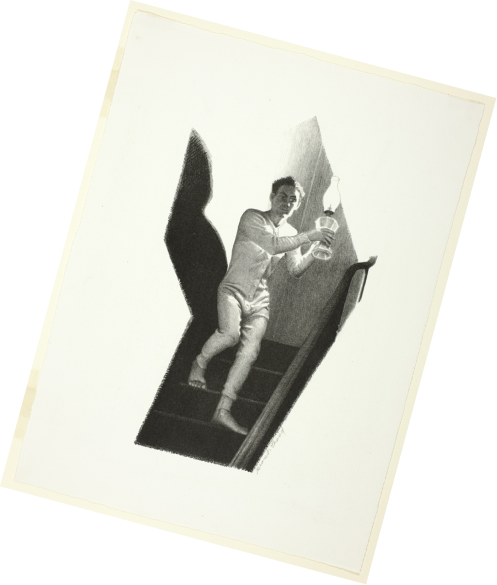
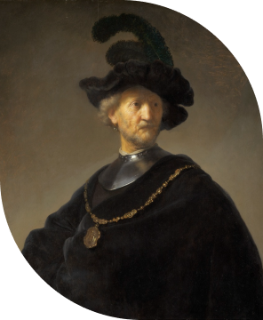
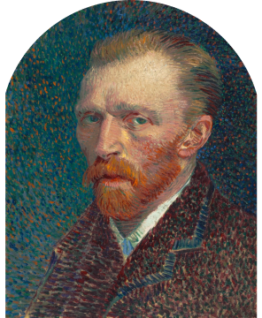
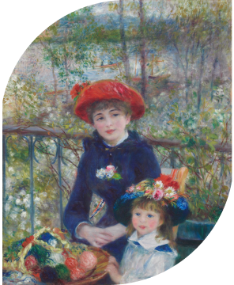

LAMDA
AMERICAN
GOTHIC
THE QA ARTIST
Grant Wood
Grant Wood, famous for his representations of the Midwest—of which the Art Institute’s American Gothic (1930.934) is his most recognizable example—intended The Pump to be an illustration for Sinclair Lewis’s novel Main Street (1920).
American Gothic
This image of a contemporary water pump would have been a perfect fit for Lewis’s novel about life in a midwestern town. The drawing was given to the Art Institute by Carter Manny, Jr., who received it as a high school graduation gift from the artist in 1937.

New gallery
New gallery

1631
Rembrandt Harmensz. van Rijn
Old Man with a Gold Chain
This evocative character study is an early example of a type of subject that preoccupied the great Dutch master Rembrandt van Rijn throughout his long career. Although his large output included landscapes, genre paintings, and the occasional still life.

1631
Rembrandt Harmensz. van Rijn
Old Man with a Gold Chain
This evocative character study is an early example of a type of subject that preoccupied the great Dutch master Rembrandt van Rijn throughout his long career. Although his large output included landscapes, genre paintings, and the occasional still life.

1631
Rembrandt Harmensz. van Rijn
Old Man with a Gold Chain
This evocative character study is an early example of a type of subject that preoccupied the great Dutch master Rembrandt van Rijn throughout his long career. Although his large output included landscapes, genre paintings, and the occasional still life.